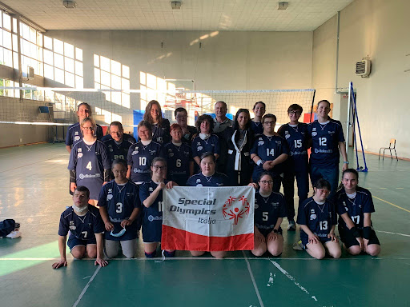

Project 01 / Phase 04
Special Olympics: La Missione attraverso lo Sport
“Che io possa vincere, ma se non riuscissi, che io possa tentare con tutte le mie forze” — Giuramento dell’Atleta Special Olympics. Supportiamo 12.000 atleti attraverso programs come Unified Sports® e La scuola inclusiva.
Descrizione dell'attività:
Questa esperienza di PCTO è stata per me una grandissima opportunità di crescita, sia a livello personale che formativo. Ho affiancato lo staff tecnico e i tutor nelle attività di allenamento e assistenza dedicate a persone con disabilità intellettiva, vivendo da vicino i valori dell'inclusione sociale attraverso lo sport.
Technical Highlights
Supporto agli allenamenti
Ho collaborato attivamente con i tecnici per preparare gli esercizi, spiegare i percorsi atletici e aiutare gli atleti a svolgere le attività sportive in base alle loro capacità.
Assistenza e sicurezza:
Mi sono occupato dell'assistenza diretta dei partecipanti prima, durante e dopo la sessione di allenamento, assicurandomi che ognuno si trovasse in un ambiente sicuro, accogliente e stimolante.
Inclusione e motivazione
Oltre alla parte pratica, il mio compito principale è stato quello di creare un legame di fiducia con gli atleti. Attraverso l'ascolto, l'empatia e l'entusiasmo, ho cercato di trasmettere positività, incoraggiandoli a superare i propri limiti sempre con il sorriso e in un clima di festa.
Impact Gallery

Phase 01

Phase 02

Phase 03

Phase 04